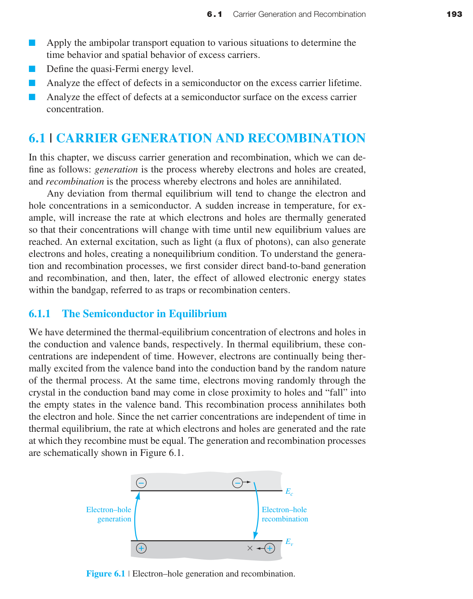
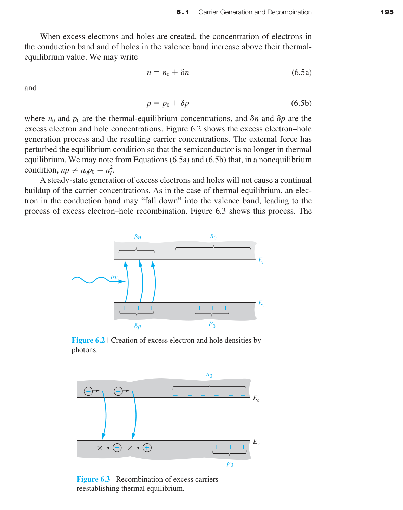
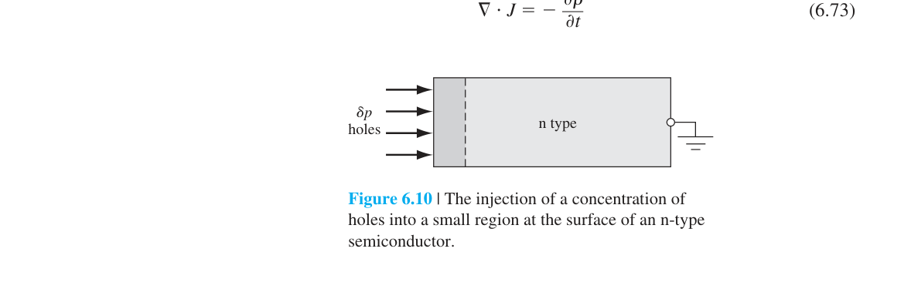
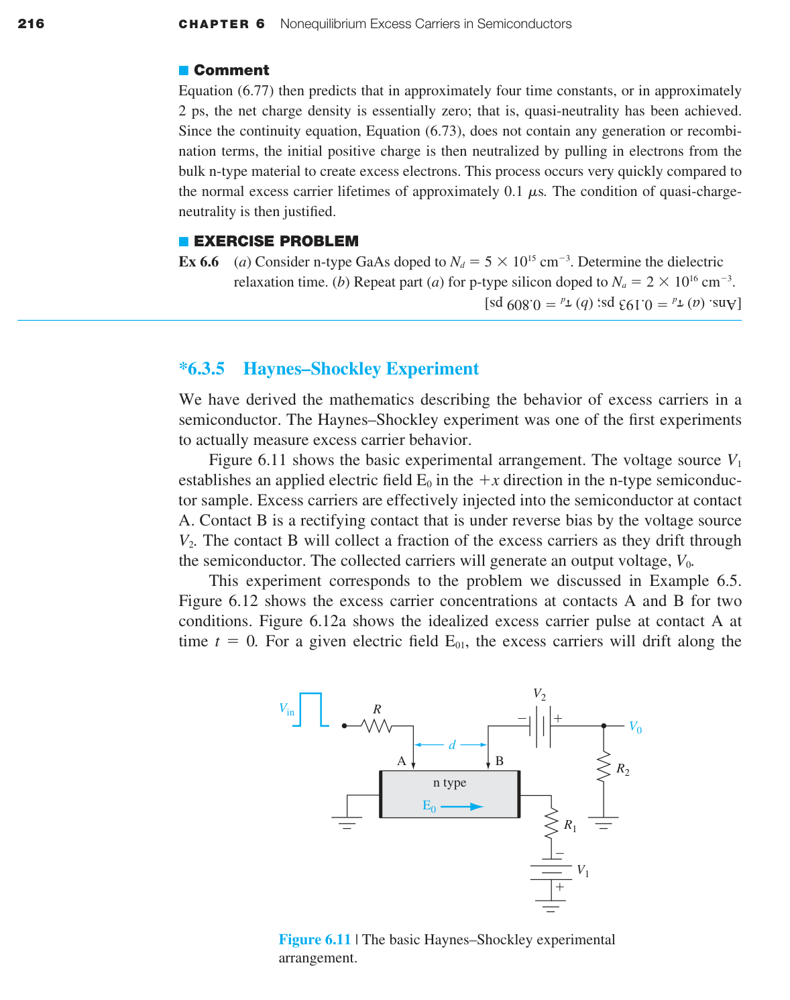
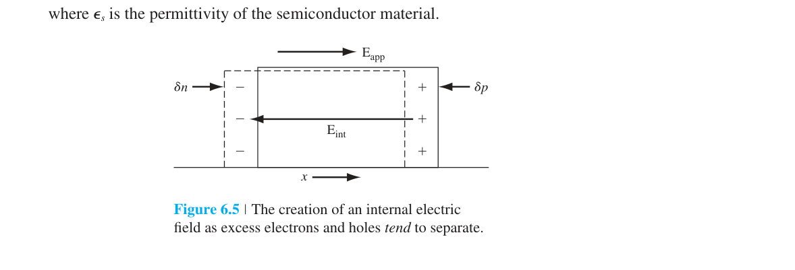
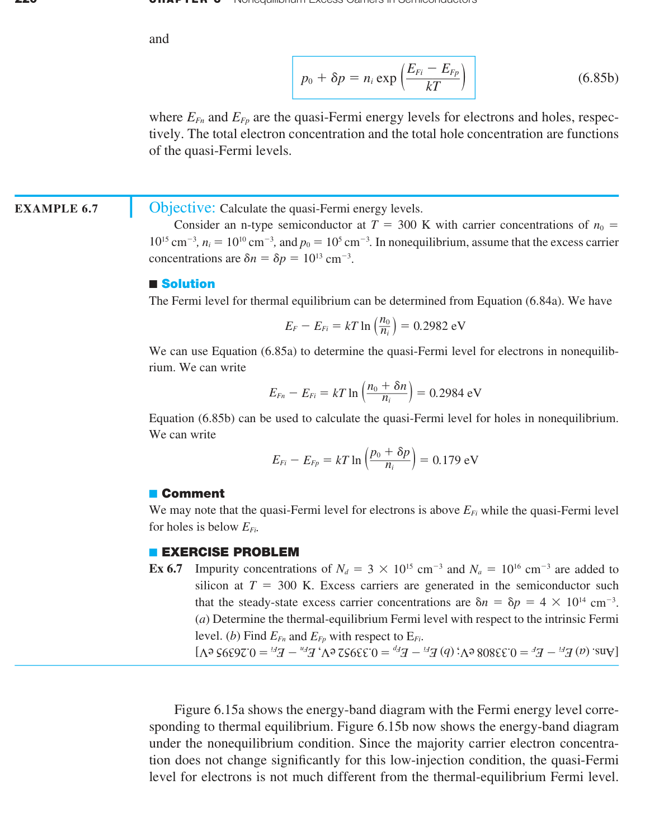
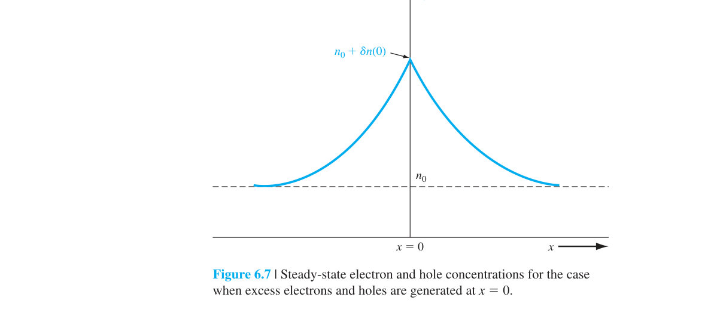
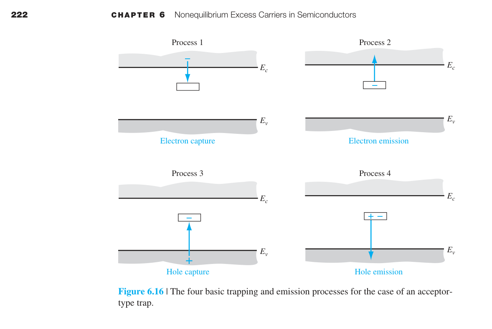
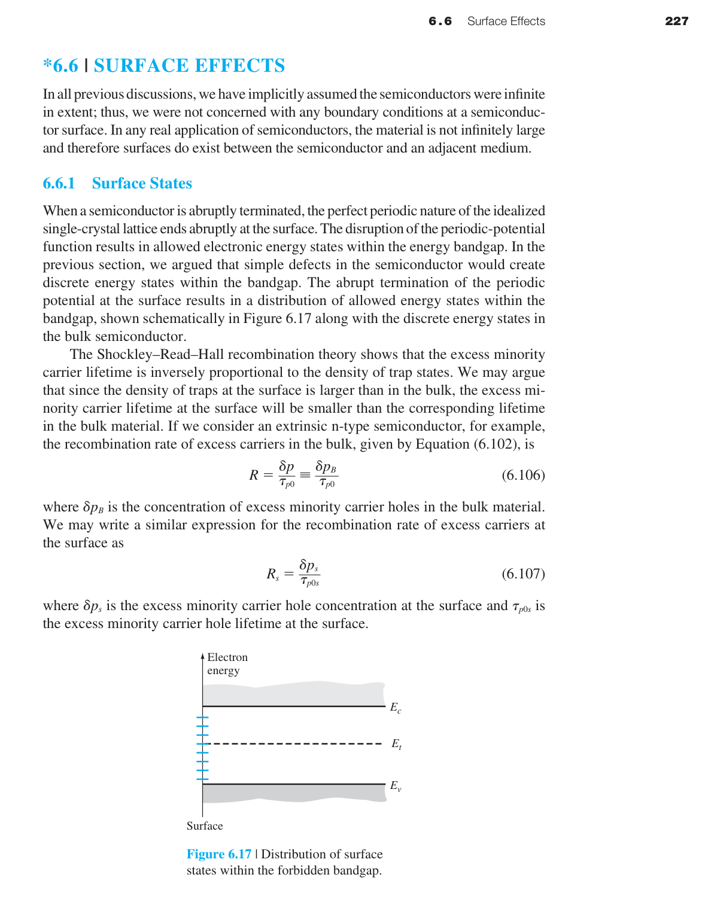

非平衡過量載子
6.0 本章預覽
第四章假設半導體處於熱平衡——沒有外部激發，$n_0 p_0 = n_i^2$。但實際的半導體元件永遠在非平衡狀態下運作。當你把 pn 接面順向偏壓時，你注入了過量少數載子。當光照射太陽能電池時，光子產生了電子-電洞對。當 MOSFET 的通道導通時，閘極電壓吸引了過量載子到表面。
本章回答：過量載子從哪裡來（產生）、去哪裡（復合）、如何移動（雙極傳輸）、活多久（壽命）、以及如何用 Fermi 統計描述非平衡狀態（準 Fermi 能階）。
關鍵概念
- 過量載子：光照或注入使 $np>n_i^2$，偏離熱平衡。
- 連續性方程：漂移 + 擴散 + 產生 − 復合。
- 低階注入：少數載子擴散方程主導元件電流。
- 準 Fermi 能階：$E_{Fn},E_{Fp}$ 描述非平衡統計。
- 壽命與表面復合：SRH 與表面態決定載子存留時間。
🧭 本章推理地圖
- 已知條件外部激發或偏壓打破熱平衡，產生過量載子（§6.1）
- 中間機制連續性方程與復合過程控制載子分布隨時間演化（§6.2–§6.5）
- 非平衡態準 Fermi 能階分離量對應外加偏壓與注入強度（§6.4）
- 工程用途分析 pn 接面注入、光電產生與開關暫態（Ch7–Ch8、Ch14）

6.1 載子產生與復合

在熱平衡下，熱產生率 $G_0$ 和復合率 $R_0$ 精確相等——電子不斷從價帶被熱激發到導帶（產生），同時導帶中的電子也不斷落回價帶（復合）。兩個過程速率相等→淨載子濃度不變。
但當你外加激發時（光照、電壓注入），產生率超過復合率→出現過量載子：
因為電子和電洞成對產生（一個電子跳到導帶必然在價帶留下一個電洞），過量電子和過量電洞的濃度相等：$\delta n = \delta p$。這稱為電中性條件。
低階注入 vs 高階注入
低階注入（low-level injection）：過量載子濃度遠小於多數載子熱平衡濃度。例如 n 型 Si（$n_0=10^{16}$ cm⁻³）中注入 $\delta n = \delta p = 10^{12}$ cm⁻³→$\delta n \ll n_0$（小了四個數量級）→多數載子濃度幾乎不變（$n\approx n_0$），但少數載子濃度變化劇烈（$p$ 從 $p_0=2.25\times10^4$ 變成 $\sim10^{12}$——增加了八個數量級）。
高階注入（high-level injection）：$\delta n$ 與 $n_0$（或 $p_0$）可比擬甚至更大。
SRH 復合理論——陷阱輔助復合
直接能帶間復合（電子從導帶直接跳到價帶）在間接能隙半導體（如 Si）中效率極低，因為需要聲子參與來保持動量守恆。實際上，Si 中的復合主要透過陷阱（trap）——能隙中的深層缺陷能階。

物理圖像：陷阱就像一個「中途島」——電子不會直接從導帶跳到價帶（能量差太大），而是先跳到陷阱能階 $E_t$（第一步），再從 $E_t$ 跳到價帶（第二步）。陷阱越靠近能隙中央（$E_t\approx E_{Fi}$），兩步的能量差都適中→復合效率最高。
📝 自編概念例 — $\delta n=\delta p$
光產生一電子必同時產生一電洞，過剩濃度成對且相等（準中性）。
6.1.1 熱平衡下的半導體
熱平衡下，電子與電洞仍不斷產生與復合，但平均產生率 $G_0$ 等於平均復合率 $R_0$，載子濃度維持不變。平衡不是沒有微觀事件，而是正反過程的淨效果為零。
在平衡時，整個半導體可用單一 Fermi 能階 $E_F$ 描述；$n_0$、$p_0$ 由同一化學勢決定，且滿足 $n_0 p_0 = n_i^2$。
一旦受到光照、注入或偏壓，產生與復合不再平衡，出現過剩載子 $\delta n = \delta p$（電中性）。
理解「平衡是動態」後，連續性方程中的 $G-R$ 項才有明確物理意義。
📝 自編概念例
室溫 Si 中 $G_0\sim10^{10}$ cm⁻³s⁻¹ 量級，與 $R_0$ 精確抵消。
6.1.2 過量載子的產生與復合
過量載子可由光吸收、電流注入、高能粒子或熱擾動產生。在 n 型材料中，多數電子濃度幾乎不變，真正改變元件行為的常是少數載子電洞。
復合是過剩載子回到平衡的過程：直接復合、SRH 陷阱輔助復合、輻射復合與 Auger 復合，機制決定材料適合發光還是低漏電。
低階注入：$\delta n \ll n_0$（n 型），少數載子劇變、多數載子近似常數。高階注入：$\delta n$ 與 $n_0$ 可比，線性近似失效。
低階/高階注入判斷是本章所有簡化能否成立的第一道關卡。
📐 例題 — 低階注入檢核
n 型 $n_0=10^{16}$ cm⁻³，注入 $\delta n=10^{12}$ → $\delta n/n_0=10^{-4}$，低階注入成立。
6.2 連續性方程與擴散長度
第五章的漂移-擴散方程告訴我們載子如何移動。
逐項物理解讀：
- $\partial p/\partial t$：某點電洞濃度的時間變化率。穩態下為零。
- $-(1/e)\partial J_p/\partial x$：電流的散度——如果 $J_p$ 隨 $x$ 增大（流入多於流出），該點的電洞濃度增加。注意負號：$J_p$ 向右增大意味著更多電洞流出→濃度下降。
- $G_p$：產生率（cm⁻³s⁻¹）。光照射（光電效應）、碰撞電離（崩潰）、熱產生（空乏區中 $np < n_i^2$ 時）。
- $R_p = \delta p/\tau_{p0}$：復合率。過量載子以壽命 $\tau$ 為時間尺度衰減。$R_p$ 正比於 $\delta p$——載子越多，復合越快。
這就像一個浴缸的水位變化 = 水龍頭進水（產生）+ 排水孔出水（復合）+ 從隔壁浴缸流過來的水（電流）。
在半導體中，通常沒有外部產生（$G'=0$），也沒有電場（中性區），只剩下擴散和復合：
這個微分方程的解是 $\delta p(x) = \delta p(0)\,e^{-x/L_p}$，其中：
擴散長度的數值：對 Si 中的少數載子電洞（$D_p \approx 12$ cm²/s，$\tau_{p0} = 1$ µs）：$L_p = \sqrt{12\times10^{-6}} \approx 35$ µm。若 $\tau_{p0} = 1$ ms（高品質 FZ-Si）：$L_p \approx 1.1$ mm。這就是為什麼太陽能電池的基板厚度通常在 100–200 µm——必須薄於 $L_p$ 才能有效收集光生載子。

📐 例題 — Si 的 $L_p$
$D_p=12$ cm²/s、$\tau=1$ µs → $L_p\approx35$ µm。
6.2.1 連續性方程
連續性方程本質上是粒子數守恆。對電子：
濃度變化來自電流散度、產生率與復合率。電流流出多於流入會降低濃度；產生增加、復合降低濃度。電洞方程符號相反，需留意電荷方向。
穩態時 $\partial/\partial t=0$；無電場時擴散主導；一維問題可大幅簡化。不同元件模型即對連續性方程做不同合理近似。
建模時先問：穩態？一維？低階注入？可否忽略電場？每拿掉一項都需物理理由。
📝 自編概念例 — 浴缸類比
$\partial p/\partial t$ = 流入淨量 + 水龍頭（$G$）− 排水孔（$R$）。
6.2.2 時間相依擴散方程
無電場、無體產生時，過剩少數載子滿足
穩態解 $\delta p(x)=\delta p(0)e^{-x/L_p}$，其中 $L_p=\sqrt{D_p\tau_{p0}}$。瞬態則描述光脈衝關閉後的衰減或注入建立過程。
擴散係數決定空間展開速度，壽命決定時間衰減；兩者合成可收集距離 $L_p$。太陽能電池、BJT 基極、光偵測器都依賴 $L_p$ 與幾何尺寸的比較。
Si 中 $D_p\sim12$ cm²/s、$\tau_{p0}=1$ µs → $L_p\approx35$ µm，是設計吸收厚度的關鍵尺度。
📐 例題 — 估算 $L_p$
$D_p=25$ cm²/s、$\tau=4$ µs → $L_p=\sqrt{25\times4\times10^{-6}}=10$ mm（高品質材料）。
6.3 雙極傳輸 ⭐

一個常見的誤解是：過量電子和過量電洞各自獨立地擴散和漂移。這是錯的。
因為電子和電洞帶相反電荷，它們之間有庫侖吸引力。如果電子試圖擴散得比電洞快（電子的 $D_n$ 通常大於 $D_p$），就會產生微小的電荷分離→產生內建電場→這個電場拖慢電子、加快電洞→迫使兩者以相同的有效速度一起移動。這就是雙極傳輸（ambipolar transport）的本質。

雙極傳輸方程與單一載子的擴散方程形式完全相同，但用等效的雙極參數取代：
關鍵簡化（低階注入 n 型）：$D' \approx D_p$（雙極擴散係數≈少數載子擴散係數），$\mu' \approx \mu_p$。這意味著在 n 型材料中，過量載子的傳輸由少數載子（電洞）的參數決定。這是一個巨大的簡化——我們不需要解兩個耦合的傳輸方程，只需要解少數載子的擴散方程。
📝 自編概念例
低階 n 型：$D'\approx D_p$，雙極問題退化成少數載子擴散。
6.3.1 雙極方程推導
電子與電洞電流方程、連續性方程與近似電中性一起使用，可化簡為描述共同過剩載子 $\delta n=\delta p$ 的雙極傳輸方程，有效參數為 $D'$、$\mu'$。
若電子擴散快於電洞，局部電荷分離產生內建電場，拖慢快的、拉動慢的載子，使兩者以共同速度運動。$D'$ 正是這種耦合後的有效擴散係數。
低階注入 n 型：$D'\approx D_p$、$\mu'\approx\mu_p$，只需解少數載子方程。
光生載子、注入載子問題中，成對產生的電子—電洞幾乎總是雙極耦合。
📝 自編概念例
庫侖吸引力使 $\delta n$ 與 $\delta p$ 空間分布同步，不能各解一方程後忽略耦合。
6.3.2 外質摻雜與低階注入極限
外質 n 型材料中，電子為多數載子且 $n_0$ 很大；過剩載子傳輸由少數載子電洞主導，方程可寫成僅含 $\delta p$ 的擴散—復合形式。p 型則角色對調。
低階注入判準：$\delta n \ll n_0$（n 型）或 $\delta p \ll p_0$（p 型）。此時 $n\approx n_0$、$p\approx p_0+\delta p$，多數載子濃度視為常數。
注入過強時進入高階注入，準 Fermi 能階分裂增大，復合機制與遷移率都可能改變，少數載子單方程近似失效。
先判斷材料類型與注入量級，再決定能否只用少數載子方程。
📐 例題 — n 型低階極限
$N_d=10^{15}$ cm⁻³，$\delta p=10^{13}$ → $\delta p\ll n_0$，可用 $D'\approx D_p$。
6.3.3 雙極傳輸的應用
光照產生電子—電洞對；若未立即被電場分離，便以雙極方式擴散。p-n 接面正向偏壓注入少數載子到中性區，擴散並復合形成二極體電流。
太陽能電池：空乏區光生載子由電場分離；中性區則須擴散至接面才被收集。壽命、$D$ 與表面復合直接影響量子效率。
中性區少數載子常呈 $\delta p(x)=\delta p(0)e^{-x/L_p}$，衰減長度即 $L_p$，此圖像導向 Shockley 二極體方程。
雙極傳輸把光電與 pn 電流統一在同一套擴散—復合語言下。
📝 自編概念例
$W\ll L_p$ 時大部分注入少數載子可到達接面；$W\gg L_p$ 則多數在途中復合。
6.3.4 介電弛豫時間常數
局部淨電荷會建立內建電場，驅動多數載子重新分布以恢復近似電中性。此過程的時間尺度為介電弛豫時間：
對 Si（$\sigma\sim1$ (Ω·cm)⁻¹）：$\tau_d\sim10^{-12}$ s（皮秒），比少數載子壽命（µs）快約 $10^6$ 倍。因此除空乏區或極短瞬態外，可假設 $\delta n=\delta p$。
這解釋了為何過剩電子與電洞濃度必須一起變化，也為雙極傳輸的電中性前提提供時間尺度依據。
比較 $\tau_d$ 與載子渡越時間，可判斷傳輸問題能否使用準中性近似。
📐 例題 — $\tau_d$ 量級
$\epsilon_s=1.04\times10^{-12}$ F/cm、$\sigma=10$ (Ω·cm)⁻¹ → $\tau_d\approx10^{-13}$ s。
6.3.5 Haynes-Shockley 實驗——直接測量 $D$, $\mu$, $\tau$
1951 年，Haynes 和 Shockley 做了一個優美的實驗，首次直接測量了少數載子的遷移率、擴散係數和壽命——這三個參數是半導體物理的核心。
實驗裝置：一根長條形的 n 型 Ge 晶體。左端有一個「注入點」（用脈衝光或電脈衝注入過量電洞），右端有一個「探測點」（測量電洞到達時產生的電壓訊號）。晶體兩端施加一個縱向電場 $\mathcal{E}$。
測量原理：
① 遷移率 $\mu_p$：施加電場後，過量電洞的「波包」以漂移速度 $v_d = \mu_p \mathcal{E}$ 向探測點移動。測量注入到偵測的時間 $t_d$，已知距離 $d$ 和電場 $\mathcal{E}$：$\mu_p = d/(t_d \mathcal{E})$。
② 擴散係數 $D_p$：電洞波包在漂移的同時也會擴散（變寬）。偵測到的訊號 pulse 寬度 $\Delta t$ 反映了擴散程度：$D_p = (\Delta x)^2/(2t_d)$，其中 $\Delta x$ 是 pulse 的空間寬度。
③ 壽命 $\tau_{p0}$：隨著距離增加，pulse 的振幅逐漸衰減（因為復合）。從振幅衰減的速率可推算壽命。
📐 例題 — Einstein 關係檢核
分別測得 $D_p$、$\mu_p$ 後檢查 $D/\mu=kT/e$ 是否在實驗誤差內成立。
6.4 準 Fermi 能階
在熱平衡下，整個系統只有一個 Fermi 能階 $E_F$。但在非平衡狀態下，電子和電洞不再處於同一熱平衡→必須引入兩個獨立的 Fermi 能階：
何時需要準 Fermi 能階？只要系統偏離熱平衡（有外加電壓、光照、或注入），$np \neq n_i^2$，就必須用 $E_{Fn}$ 和 $E_{Fp}$ 來分別描述電子和電洞的統計分布。在平衡態中性區，$E_{Fn} = E_{Fp} = E_F$（統一的 Fermi 能階）。在空乏區或有注入的區域，$E_{Fn} \neq E_{Fp}$。

物理意義：$E_{Fn} - E_{Fp}$ 的大小是偏離熱平衡程度的直接度量。平衡時 $E_{Fn}=E_{Fp}=E_F$。順向偏壓注入過量載子→$np>n_i^2$→$E_{Fn}>E_{Fp}$。反向偏壓抽取載子→$np 在 pn 接面中的行為：順向偏壓下，$E_{Fn}$ 在 n 側高、$E_{Fp}$ 在 p 側低。在空乏區中，$E_{Fn}$ 和 $E_{Fp}$ 逐漸趨近——但它們不在空乏區內對齊（這是常見的誤解）。它們在空乏區邊緣才恢復到統一的 $E_F$。$eV_a = E_{Fn}(n\text{側}) - E_{Fp}(p\text{側})$——施加的電壓直接對應於兩個準 Fermi 能階的差。 順偏注入使 $np>n_i^2$ → $E_{Fn}>E_{Fp}$；開路太陽能電池中分裂對應可輸出電壓上限。📐 例題 — 準 Fermi 分裂
6.5 過量載子壽命
少數載子不會永遠活著——它們最終會與多數載子復合。從產生到復合的平均存活時間就是少數載子壽命 $\tau$。
SRH 復合理論——陷阱輔助復合的定量分析
在禁帶中存在深層陷阱能階（來自晶格缺陷、雜質、或界面態）。這些陷阱提供了「台階」——電子先從導帶落入陷阱，再從陷阱落入價帶。兩步的總速率比直接復合快得多（因為每步的能量差都適中）。

SRH 穩態壽命：
其中 $\sigma_p$ 是陷阱的捕獲截面（$\sim10^{-15}$ cm²），$v_{th}$ 是載子熱速度（$\sim10^7$ cm/s），$N_t$ 是陷阱密度（cm$^{-3}$）。對 $N_t = 10^{12}$ cm$^{-3}$：$\tau_{p0} = 1/(10^{-15}\times10^7\times10^{12}) = 10^{-4}$ s = 100 µs。
陷阱能階位置的重要性：最有效的復合陷阱位於禁帶中央（$E_t \approx E_i$）。為什麼？因為兩步過程（導帶→陷阱→價帶）的速率取決於兩步中較慢的一步。如果陷阱靠近導帶→第一步快但第二步慢（陷阱到價帶的能量差大）。如果陷阱在中央→兩步都適中→總速率最大。這就是為什麼 Au、Cu、Fe 等深能階雜質對 Si 的壽命影響巨大——它們的能階恰好在禁帶中央附近。
壽命與摻雜濃度的關係：典型 Si 的少數載子壽命在 $10^{-7}$ 到 $10^{-3}$ 秒範圍內：
| 材料 | 壽命範圍 | 限制因素 |
|---|---|---|
| 浮區（FZ）高純 Si | ∼1 ms | Auger 復合（高注入時） |
| Czochralski（CZ）Si | ∼1–10 µs | 氧相關缺陷（Czochralski 氧沉澱） |
| 含重金屬污染的 Si | ∼0.1–1 µs | 深能階雜質（Au, Cu, Fe） |
| 多晶 Si | ∼1–100 ns | 晶界復合 |

📐 例題 — 陷阱位置
$E_t$ 在禁帶中央時 SRH 復合最快；靠近能帶邊則某一步成瓶頸。
6.5.1 Shockley–Read–Hall 理論
SRH 復合透過能隙中的陷阱能階分兩步進行：導帶電子落入陷阱，再落入價帶填補電洞。陷阱接近能隙中央（$E_t\approx E_{Fi}$）時兩步速率均衡，復合效率最高。
晶格缺陷、金屬污染、界面態都會引入復合中心。對太陽能電池與光偵測器，長壽命有利；對高速開關，有時刻意縮短壽命以降低反向恢復時間。
空乏區陷阱還會促進產生—復合電流，增加漏電，使二極體偏離理想 $I$–$V$。
量測壽命時應註明注入條件與主導復合機制。
📐 例題 — SRH 壽命
$N_t=10^{12}$ cm⁻³、$\sigma_p=10^{-15}$ cm²、$v_{th}=10^7$ cm/s → $\tau_{p0}=100$ µs。
6.5.2 外質摻雜與低階注入極限
低階注入下，復合率常近似 $R_p=\delta p/\tau_{p0}$，連續性方程線性化，易得指數空間解。二極體與 BJT 少數載子分布推導皆用此近似。
摻雜影響壽命：高摻雜增加多數載子濃度，可能增強 Auger 復合；缺陷與應力也會引入陷阱。實際 $\tau$ 隨注入、溫度與製程變化，未必為常數。
壽命告訴你載子能活多久，$L=\sqrt{D\tau}$ 才告訴你能走多遠；元件設計關心的是可收集距離。
FZ 高純 Si 壽命可達 ms；多晶 Si 因晶界復合僅 ns–µs。
📝 自編概念例
壽命增 10 倍 → $L_p$ 只增 $\sqrt{10}\approx3.16$ 倍。
6.6 表面效應
到目前為止我們假設晶體是無限大的。但真實元件有表面——晶體突然終止的地方。表面有大量的懸鍵（dangling bonds）——未飽和的共價鍵，它們是極其有效的復合中心。
表面態密度 $D_{it}$：未處理的 Si 表面有 $\sim10^{15}$ cm$^{-2}$eV$^{-1}$ 的表面態——相當於每平方公分有 $10^{15}$ 個「復合陷阱」。以表面態均勻分布在禁帶中計算，等效的表面復合中心密度極高。

表面復合速度 $s$ 定義為表面處的復合率除以過量載子濃度：
$s$ 的物理意義：載子到達表面後被復合的「有效速度」。$s$ 越大→表面復合越劇烈。
| 表面處理 | $s$ (cm/s) | $D_{it}$ (cm⁻²eV⁻¹) |
|---|---|---|
| 未處理裸 Si 表面 | $10^3$–$10^5$ | $\sim10^{15}$ |
| 熱氧化 SiO₂（未退火） | $10^2$–$10^3$ | $\sim10^{11}$–$10^{12}$ |
| SiO₂ + 含氫退火 | 1–10 | $\sim10^{10}$ |
| Al₂O₃ 鈍化（PERC 太陽能電池） | < 5 | $\sim10^{10}$–$10^{11}$ |
| a-Si:H 鈍化（HIT 太陽能電池） | < 2 | $<10^{10}$ |
鈍化技術的物理原理：SiO₂ 鈍化的關鍵是氫原子——氫可以填補 Si/SiO₂ 界面處的懸鍵→將 $D_{it}$ 從 $10^{15}$ 降到 $10^{10}$。含氫退火（Forming Gas Anneal, FGA：400°C 的 H₂/N₂ 氣氛）是半導體製程的標準步驟。Al₂O₃ 的優勢是帶有固定負電荷→在 p 型 Si 表面形成反轉層→場效應鈍化（與化學鈍化互補）。
📝 自編概念例 — $s$ 比較
裸 Si $s\sim10^4$ cm/s；Al₂O₃ 鈍化可 <5 cm/s，差 3–4 個數量級。
6.6.1 表面態
晶體表面晶格終止，產生懸鍵與界面缺陷，在能隙中形成表面態，可捕獲電子或電洞，改變表面電荷與能帶彎曲。
未處理 Si 表面 $D_{it}\sim10^{15}$ cm⁻²eV⁻¹，是極有效的復合中心。光生載子在表面附近產生時，常在到達電極前被復合。
表面態還可能釘扎 Fermi 能階，使 MOS 臨界電壓、次臨界斜率與 C–V 特性偏離理想值。
薄膜太陽能電池、FinFET 與光偵測器都高度依賴界面工程。
📝 自編概念例
FGA（含氫退火）用 H 填補 Si/SiO₂ 懸鍵，$D_{it}$ 可降 5 個數量級。
6.6.2 表面復合速度
表面復合速度 $S$（或 $s_p$）把表面復合通量與表面過剩濃度聯繫：
$S$ 越大，表面越像強吸收邊界；$S$ 越小，代表鈍化良好。裸 Si $s\sim10^3$–$10^5$ cm/s；Al₂O₃ 鈍化可 $<5$ cm/s。
當樣品厚度 $t\ll L_p$ 時，載子易達表面，有效體壽命由表面主導，即使體材料很純亦然。
降低表面復合是提升太陽能電池效率（PERC、HIT）與改善 MOS 可靠度的核心技術之一。
界面品質因此是連接材料參數與器件性能的關鍵環節。
📐 例題 — 表面邊界
$S\to\infty$ 對應 $\delta p(0)=0$（完全吸收）；$S=0$ 對應零法向梯度（反射邊界）。
本章摘要
- 過量載子：$\delta n=n-n_0$，$\delta p=p-p_0$。電中性要求 $\delta n=\delta p$。
- 低階注入：$\delta n\ll n_0$（n 型）——最常見的元件操作條件。
- SRH 復合：陷阱輔助兩步驟復合。$E_t\approx E_{Fi}$ 時最有效。
- 連續性方程：濃度變化 = 傳輸 + 產生 − 復合。
- 擴散長度：$L_p=\sqrt{D_p\tau_{p0}}$——少數載子復合前的平均行進距離。
- 雙極傳輸：電子電洞庫侖耦合→一起移動。低階注入下由少數載子參數主導。
- 介電弛豫時間：$\tau_d=\epsilon/\sigma$∼皮秒——多數載子響應極快。
- 準 Fermi 能階：$E_{Fn}$ 和 $E_{Fp}$ 分離→度量偏離平衡程度。
- 載子壽命：SRH 理論決定 $\tau$ 與摻雜和陷阱密度的關係。
- 表面復合：懸鍵提供額外復合中心。鈍化可將 $s$ 降低數千倍。
常見誤解與修正
非平衡載子 的公式都來自特定物理假設；請先確認適用條件，再代入數字。
電場、電流、濃度梯度與載子流方向常不同，建議先畫圖再判斷正負號。
低階注入、空乏近似、非簡併與一維模型都不是永遠成立。
自我檢核
我能不能用一句話說出本章主軸？
本章主軸是把前面章節的材料物理量放進 非平衡載子 的具體問題中。
我能不能列出本章最重要的近似？
請確認你能指出每個公式背後的平衡、空乏、低階注入或非簡併條件。
我能不能用圖解釋主要公式？
若能畫出能帶、電場、濃度或電荷分布，公式通常就不會變成死背。
延伸學習與下一步
建議把本章公式整理成「物理意義、適用條件、常見錯誤」三欄表。
若要銜接下一章，請特別注意本章中作為邊界條件或材料參數的量。
完成後可回到習題頁，用一題數值題檢查量級是否合理。
推導、假設與章末診斷
方程式使用契約與邊界條件
- 單一壽命模型 $R=\Delta p/\tau_p$ 假設低階注入、均勻材料與小訊號復合；高注入或 SRH 能階細節需用完整復合率。
- 一維擴散方程常假設準中性、$D$ 與 $\tau$ 常數且沒有內建電場。
- 半無限樣品邊界：$\Delta p(0)=\Delta p_s$、$\Delta p(\infty)=0$；有限接觸可改用表面復合 $D(d\Delta p/dx)=S\Delta p$。
- 準 Fermi 能階只在載子各自接近局部熱平衡時有意義。
中間推導：擴散長度
- 穩態、無體生成時，連續方程為 $D_p d^2\Delta p/dx^2-\Delta p/\tau_p=0$。
- 特徵方程 $r^2-1/(D_p\tau_p)=0$。
- 定義 $L_p=\sqrt{D_p\tau_p}$，解為 $Ae^{-x/L_p}+Be^{x/L_p}$。
- 半無限遠有限要求 $B=0$，表面邊界給 $A=\Delta p_s$。
章末練習與概念診斷
壽命增加十倍，擴散長度增加十倍嗎？
不是；$L\propto\sqrt{\tau}$，只增加 $\sqrt{10}\approx3.16$ 倍。
高表面復合速度的邊界代表什麼？
表面像強吸收接觸，過量載子在表面被快速消耗，濃度降低且梯度增大。
延伸計算練習
完成上方診斷後，請在不查公式的情況下重建代表推導，並改變一個參數檢查極限行為。更多含數值與解答的題目：本章完整習題頁。